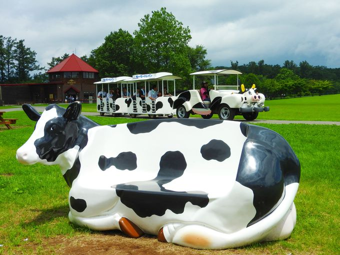

|
|
岩手県のレジャー施設安比高原スキー場安比高原スキー場は、岩手県八幡平市安比高原にあるスキー場です。例年12月上旬から5月上旬まで滑走が可能で、シンボルは4つの三角形で四季を表したマークです。 岩山パークランド岩手県盛岡市の東部の丘陵地帯にある岩山に位置する遊園地です。遊園地のシンボル「大観覧車」をはじめ、大迫力の宇宙体験ができる「アポロ」、回転が加わった「レインボースピンコースター」、無重力が体験できる「ジャンピングスター」などの絶叫マシンが揃っています。 小岩井農場小岩井農場の中でも、動物と触れ合ったり、アトラクションや自然散策を楽しめたりできるエリアがまきば園です。 まきば園内では、ひつじショーや乗馬体験、トロ馬車やちびっこボート、アーチェリーなど10種類ものアクティビティがあり、親子連れからカップルまで幅広く楽しめます。 |